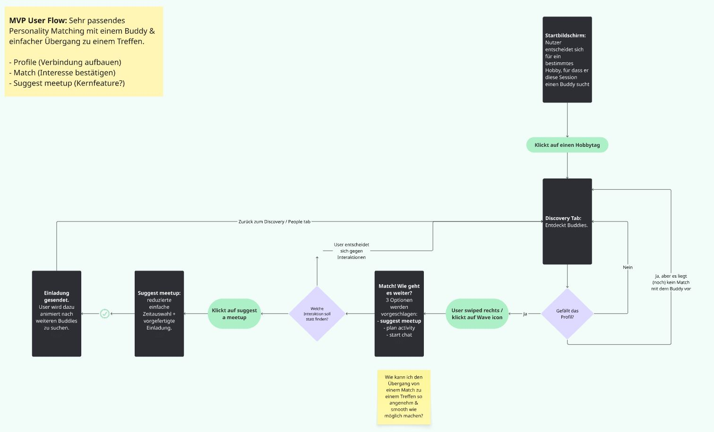

Context
People want connection. But often don't act on it.
After university or school, social structures fade and meeting new people requires more effort. Platforms like Meetup show growing demand for hobby-based connection, especially ages 25 to 35. Yet most interactions never turn into real relationships. I wanted to understand why.
Research
3 interviews. 21 survey participants. One clear pattern.
61.9%
name uncertainty as the biggest barrier
57%
find people through friends, not apps
57.1%
pursue their hobby multiple times per week
"I am afraid everyone already knows each other and I will be the outsider."
Key Insights
A gap between intention and action.
People want connection but avoid uncertain social situations, especially taking the first step alone. The problem is not motivation. It is friction.
People don't avoid connection. They avoid the uncertainty of the first step.
Persona
Sarah: the user at the centre.
Sarah, 33
Data Science Consultant, Hamburg
K-Pop, Escape Rooms, Hiking. Not shy. She just needs the situation to feel safe before she takes the first step.
Recently moved to a new city, Sarah looks for activities and events. She wants to meet new people but feels unsure in unfamiliar group situations and prefers smaller, predictable interactions. She is not isolated. She lacks shared experiences.
The Critical Moment
She sees an event she would enjoy. But she doesn't go.
Not because she isn't interested, but because she doesn't want to go alone. This one moment captures the entire problem.

Problem Reframing
People don't struggle to find opportunities. They struggle to act on them.
My problem space shifted multiple times during research: from finding people, to building lasting connections, to the real pre-problem: taking the first step at all.
How do people find others with similar hobbies?
How do those contacts turn into lasting connections?
The first step is missing. 61.9% name uncertainty as the biggest barrier.

From Insight to Decision
How research shaped the product.
Insight
What it means
Decision
Users struggle to initiate, not to find people.
The barrier is not discovery, but the first step.
Match users before they attend an activity.
Shared hobbies alone don't create meaningful matches.
Context matters: time, motivation, life situation.
Profile elements that show intent and availability.
Users are not ready to meet immediately.
Trust needs to build before real-life interaction.
Allow lightweight signals before suggesting a meetup.
One-sided initiative leads to inactive groups.
Sustainable interaction requires mutual engagement.
Design for reciprocal interaction, not passive consumption.
The Solution
Buddy-first instead of event-first.
Most non-dating platforms are event-first: sign up and hope someone will be there. Buddy First flips this. Meet one person first, then go together.

Design Principle
Reduce friction, not motivation.
People change behaviour when situations change, not when they are encouraged to act differently. Smaller steps reduce uncertainty. Clarity increases action.

Competitor Analysis
What existing apps get wrong.
Most platforms are built around events, not people. They also rely on patterns that increase anxiety rather than reduce it.
✗
FOMO pressure via missed meetup notifications
✗
Excessive push notifications
✗
Key features behind paywall
Profile Design
Warmth before competence.
Research on instant likability (thin slicing) shows warmth is assessed before competence. I structured the profile accordingly: icebreaker prompt first, then photo, then context tags. Personality and intention come before skills. A deliberate departure from dating apps where the photo always comes first.

User Flow
From discovery to real interaction.
Five navigation sections, each mapping to one concrete user need: Connect, Chat, Plans, Waves, Profile.



Wireframes
From idea to first prototype.
MVP flow: find a person, make contact, go together. No features added for feature's sake.

Key Interaction Moments
The product in action.
Browse, filter by context, match, send an activity invitation.


The waiting state as an anxiety problem
After Sarah sends a Wave, uncertainty kicks in. I designed this moment explicitly: Sarah can keep browsing while waiting. The state is productive, not empty.
Visual Direction
Warm, approachable, low-pressure.
The visual tone avoids dating-app aesthetics and corporate minimalism. It should feel like something you would actually want to use on a quiet evening.

Usability Testing
Testing assumptions with real users.
Structured test script, scenario: "You just moved to Munich and want to find someone who also knits." Tests run without guiding participants, two questions: does the profile create a desire to reach out, and is the transition from match to meetup clear?
Key finding
Users do not want to be pushed into meeting immediately. A gradual transition increases willingness to meet.
What I learned
UX Research: conducting and synthesising qualitative interviews, surveys and affinity mapping
Problem Reframing: having the courage to let go of the original question when research points elsewhere
Psychology in Design: applying behavioural psychology to profile design and friction reduction
Usability Testing: running structured tests and validating assumptions with real users
Design Ethics: making explicit decisions against dark patterns